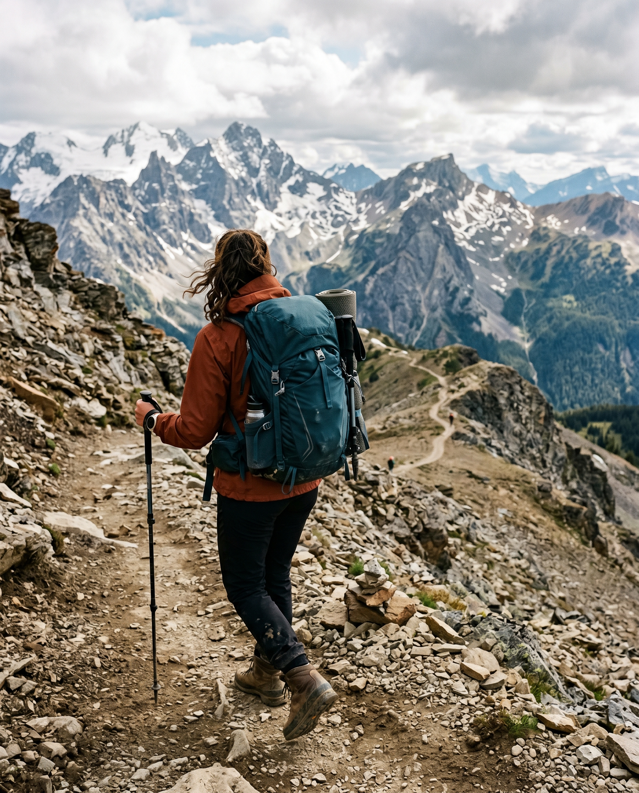

Trekkle didn’t start in a boardroom; it was born on a windswept mountain pass, fueled by a thermos of hot tea and a shared realization.
As lifelong trekkers, our founders noticed a glaring gap in the adventure world. You either had to plan everything yourself—navigating confusing permits, unpredictable logistics, and safety risks—or sign up with rigid, mass-tourism agencies that stripped the raw magic out of the mountains.
We believed there had to be a better way to connect restless souls with the world’s most breathtaking peaks. So, we built Trekkle.
Our Mission: To democratize world-class trekking by blending rugged adventure with seamless, modern management. We handle the chaos so you can experience the awe.